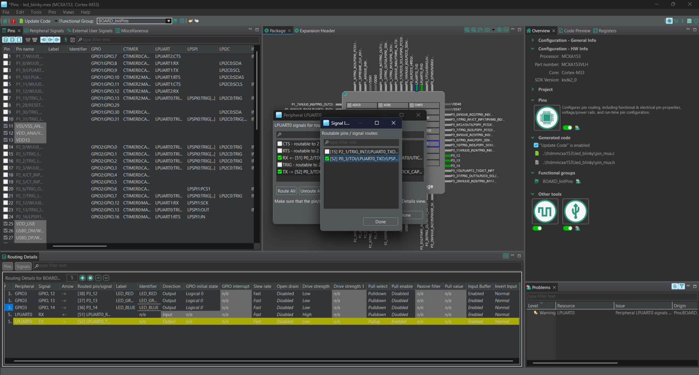
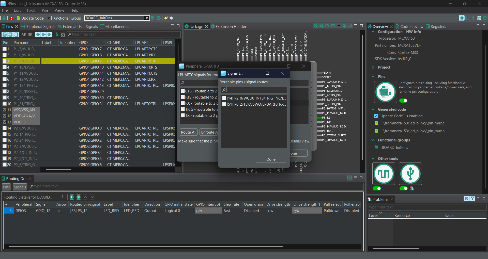
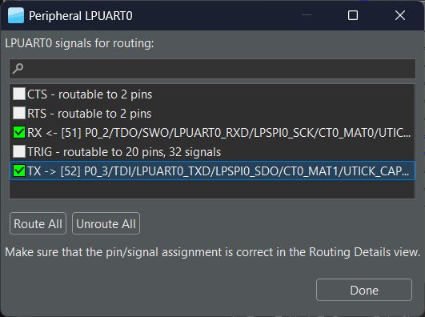
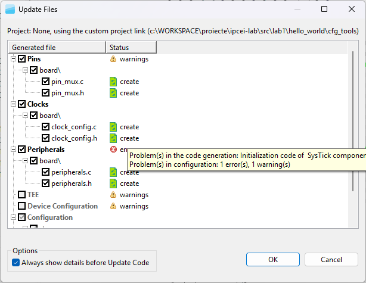
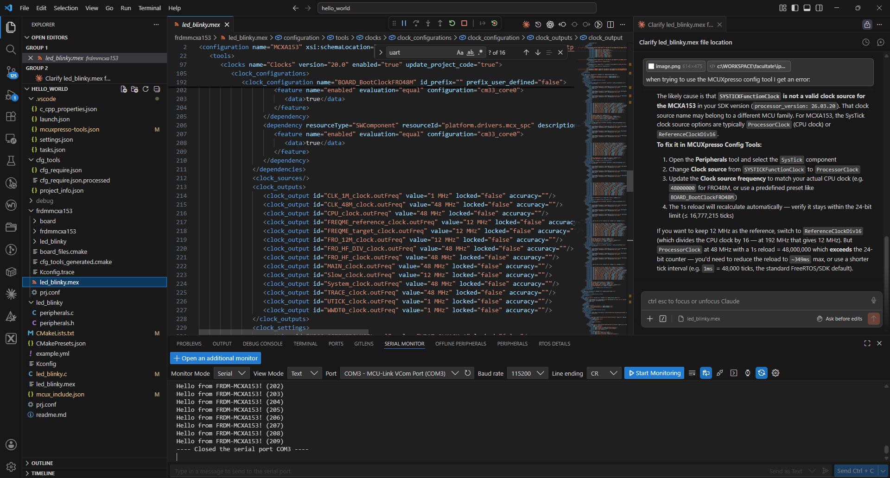
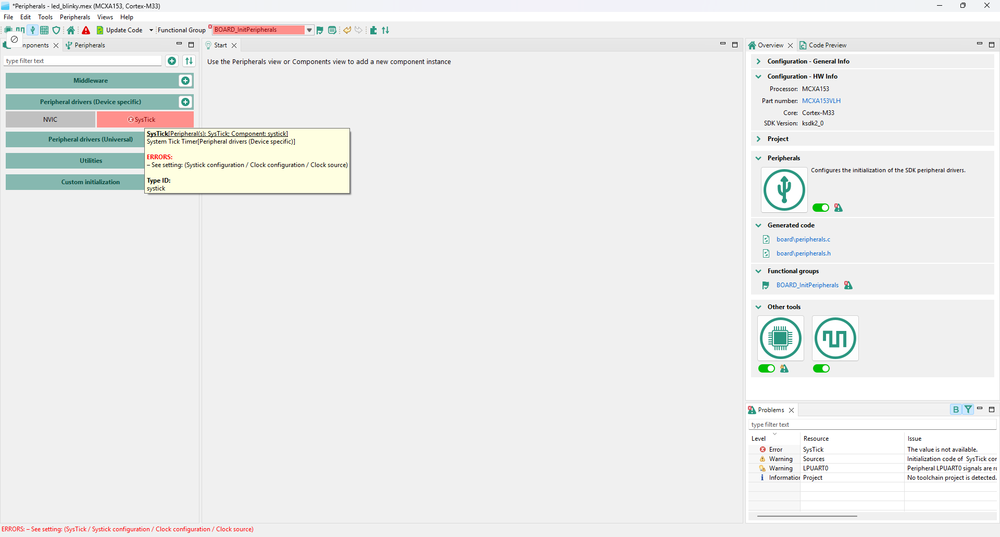
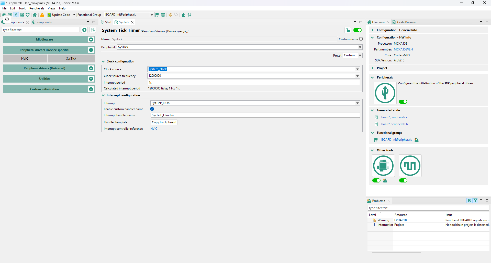
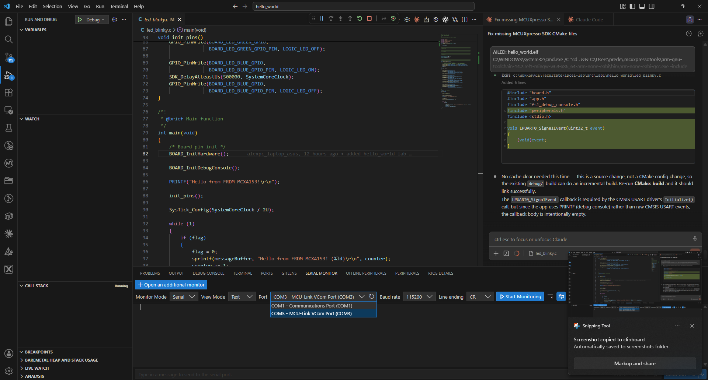
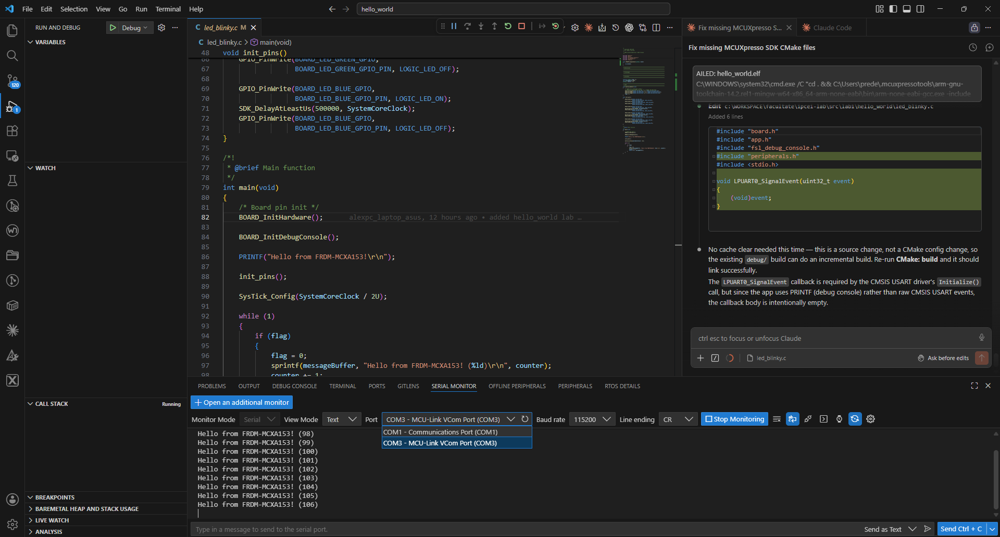

VCOM USB prin MCU-Link, printf retargetat
| Ziua / Sesiunea | Ziua 1, 22 iunie — după-amiază |
| Periferic | LPUART0 · VCOM · FRO_HF_DIV |
| Durată | 2h (13:00–15:00) |
| Responsabil | Cadru didactic UPB |
| Hardware | FRDM-MCXA153 + USB Type-C J6 (VCOM) · terminal serial pe PC (PuTTY/minicom/screen) |
LPUART0 pe FRDM-MCXA153 este conectat la MCU-Link care oferă un VCOM port pe USB — nu e nevoie de adaptor UART extern. Sursa de clock este FRO_HF_DIV (configurabilă). LP = Low Power: periferica funcționează în stop mode — relevanță directă pentru aplicații automotive (wake-on-UART). Formula baud rate pe MCX diferă de AVR (UBRR).
Board: FRDM-MCXA153 · MCX A153 (Cortex-M33 @ 96 MHz) · SDK MCUXpresso 24.12 · VS Code + CMake
printf redirecționat (retarget_putchar) prin LPUART0| Interval | Activitate | Detaliu | Cine |
|---|---|---|---|
13:00–13:30 |
LPUART pe MCX A | Formula BRR pe MCX vs UBRR AVR. Clock source: FRO_HF_DIV. FIFO TX/RX 4 intrări. LP = low power. |
cadru UPB |
13:30–14:15 |
Demo: Hello World UART | LPUART_GetDefaultConfig(), LPUART_Init(), LPUART_WriteBlocking(). Retarget printf. Terminal la 115200. |
cadru UPB |
14:15–15:00 |
Lab + GenAI session | Studenții: UART echo RX→TX + meniu (1=LED roșu, 2=LED verde, 3=all OFF). Prompt cu clock source explicit. | student + mentor |
Regulă: Copiați prompt-ul complet — contextul hardware este obligatoriu. AI-ul va genera cod greșit (pentru alte familii NXP sau Arduino) fără aceste informații.
Context hardware: FRDM-MCXA153, MCX A153 Cortex-M33, SDK MCUXpresso 24.12.
LPUART0 conectat la MCU-Link VCOM (USB J6). Clock source: FRO_HF_DIV @ 48 MHz.
Sarcina: init LPUART0 la 115200 8N1 polling (fără DMA/IRQ).
Include obligatoriu:
CLOCK_SetClkDiv(kCLOCK_DivFlexcom0Clk, 1u)
CLOCK_AttachClk(kFRO_HF_DIV_to_LPUART0)
LPUART_GetDefaultConfig(), LPUART_Init()
Arată calculul BRR și eroarea de baud rate rezultată.
Retarget printf prin LPUART_WriteBlocking.
FRDM-MCXA153, LPUART0, SDK MCUXpresso 24.12.
Problema: LPUART_Init returnează kStatus_LPUART_BaudrateNotSupport.
Config: baudRate_Bps=115200, srcClock_Hz=48000000UL.
Am apelat CLOCK_AttachClk(kFRO_HF_DIV_to_LPUART0).
Ce verific?
Hint: CLOCK_SetClkDiv pentru FRO_HF_DIV, range-ul acceptat de BRR,
și dacă srcClock_Hz corespunde cu div-ul setat.
În toolul Pins, selectați pinul pentru semnalul LPUART. Fereastra de selecție afișează toate funcțiile multiplexate disponibile pe acel pin:

Selectați semnalul LPUART0 (RX sau TX) din lista de semnale:

Click pe pictograma periferică a LPUART0 deschide dialogul LPUART0 signals for routing. Bifați RX și TX pentru a le ruta pe pinii fizici:
[51] P0_2/TDO/SWO/LPUART0_RXD/...[52] P0_3/TDI/LPUART0_TXD/...
Când apăsați Update Code, pot apărea erori dacă componenta SysTick are sursa de clock configurată greșit (SYSTICKFunctionClock nu este validă pe MCXA153):

Diagnosticare cu AI: Deschideți fișierul .mex în VS Code și întrebați asistentul AI despre eroare — acesta identifică că SYSTICKFunctionClock nu există pe MCXA153:

Detaliu eroare în Config Tools: Selectați componenta SysTick — tooltip-ul arată exact câmpul problematic (Clock source — The value is not available):

Rezolvare: Schimbați Clock source din SYSTICKFunctionClock în System_clock. Câmpul Calculated interrupt period se actualizează automat (12 000 000 ticks; 1 Hz; 1 s):

După flash, deschideți Serial Monitor din bara de jos a VS Code și selectați portul COM al MCU-Link VCOM (ex. COM3 — MCU-Link VCom Port):

Mesajul Hello from FRDM-MCXA153! apare în terminal la 115200 baud:

Ce GenAI nu știe fără context explicit — verificați înainte de upload pe placă.
CLOCK_SetClkDiv(kCLOCK_DivFlexcom0Clk, 1u) trebuie apelat înainte de CLOCK_AttachClk — AI omite frecvent această ordinekStatus_LPUART_BaudrateNotSupport apare dacă srcClock_Hz nu corespunde cu div-ul real setatUART echo + meniu LED funcțional + formula BRR calculată manual + eroarea de baud documentată
← L1: GPIO — Control Digital & Butoane · L3: Întreruperi Externe & NVIC →